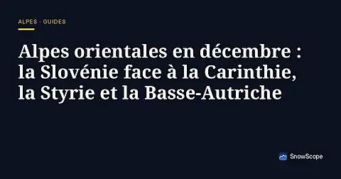
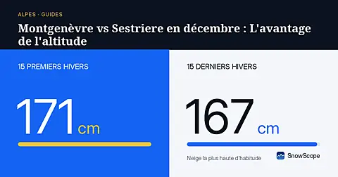
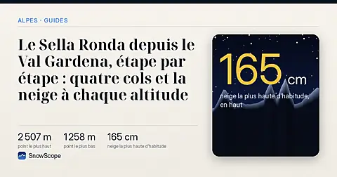
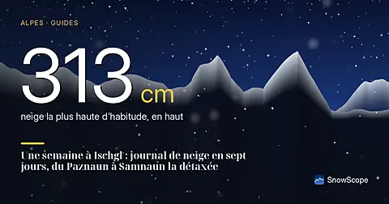
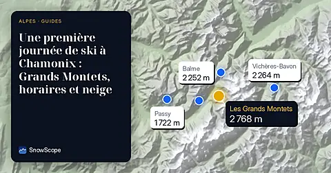
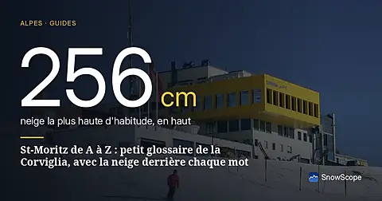
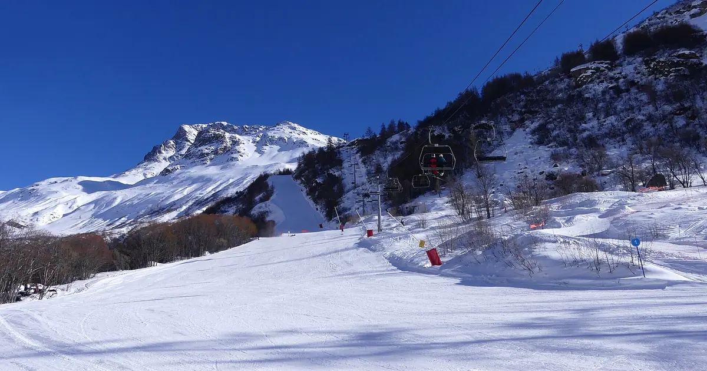
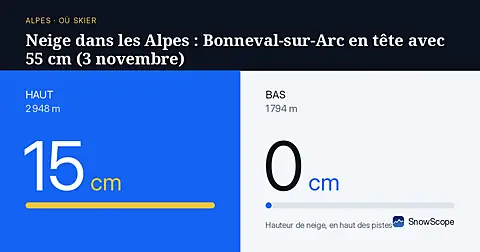

Bulletins neige · Alpes
Alpes: Les Grands Montets a pris 114 cm de neige fraîche ces 72 dernières heures, dont 16 cm sur les dernières 24. En altitude, il y a maintenant …
La neige par pays aujourd'hui
Les pays les plus blancs aujourd'hui : Suisse (64 %), Autriche (56 %) et Italie (26 %).
Le plus de neige fraîche dans la semaine : France (92 cm), Suisse (74 cm) et Italie (62 cm).
La neige aujourd'hui dans les grandes stations
- Orelle · 136 cm
- Val Thorens · 136 cm
- La Grave · 132 cm
- Val Thorens · 132 cm
- Pfelders · 118 cm
- Les Deux Alpes · 102 cm
- Alpe d'Huez Grand Domaine · 92 cm
- Anzère · 86 cm
- Espace Haute Maurienne Vanoise · 81 cm
- Zugspitze · 81 cm
- Les Arcs · 80 cm
- Bonneval-sur-Arc · 77 cm
- La Rosière · 77 cm
- Les Grands Montets · 74 cm
- La Thuile ski · 72 cm
- Les Trois Vallées · 71 cm
- Le Grand Domaine · 68 cm
- Courmayeur · 67 cm
- Paradiski · 67 cm
- Glacier 3000 · 64 cm
- Les Ménuires · 64 cm
- Stubaier Gletscher · 63 cm
- Kaprun · 62 cm
- Ovronnaz · 62 cm
À la une

La hauteur de neige à Chamonix le 13 novembre 2026, altitude par altitude : rien au fond de la vallée, 1 cm à 2001 m, 12 cm en haut de Brévent-Flégère (2486 m), 5 à 24 cm en haut des Grands Montets (2768 m). Environ un mètre prévu en altitude cette semaine, de la pluie dans la vallée. L'épaisseur habituelle sur 46 hivers.

Planifiez votre séjour de décembre 2026 aux Les Orres en comparant les prix des forfaits hebdomadaires avec notre historique de neige de 46 hivers passés.

Les neiges de début de saison dans les Alpes dépassent de 38 % la moyenne des 46 dernières années. Les pentes intermédiaires de La Plagne accumulent 36 cm de plus que d'habitude à cette date, avec de fortes chutes prévues jusqu'à dimanche.

Prévision de 79 cm de neige nouvelle aux Grands Montets du 16–18 novembre, principalement au-dessus de 2 000 m d'altitude, selon le modèle de prévision du 15 novembre.

Orcières Merlette mène les prévisions des Alpes avec 36 cm de neige nouvelle en trois jours, principalement les 9–10 novembre, selon les données du 7 novembre.

Saint François Longchamp n'a que 3 cm de neige, soit 12 % de l'enneigement habituel à cette époque, mais 110 cm sont prévus au cours des deux prochaines semaines.

Les Grands Montets ont enregistré 74 cm de neige fraîche ces dernières 72 heures, avec d'autres chutes prévues pour les jours à venir, selon notre modèle au 17 novembre 2026.

Prévisions de neige fraîche pour les Alpes jusqu'à début décembre. Saint François Longchamp en tête avec 228 cm attendus sur 14 jours, en commençant par 35 cm jeudi.
Les Arcs : 102 cm de neige fraîche en 72 heures (Alpes, 21 novembre)

Les Grands Montets a pris 114 cm de neige fraîche ces 72 dernières heures, dont 16 cm sur les dernières 24. En altitude, il y a maintenant environ 74 cm, selon notre modèle. Sur le terrain, nous avons toujours une sonde ; ces chiffres disent où aller, la sonde dit ce qu'il y a sous les skis.
Où la neige fraîche est tombée
D'autres stations s'en sortent bien : Courmayeur, Orelle et Les Arcs ont pris 105 cm, 105 cm et 102 cm en 72 heures.
Aujourd'hui, 971 des 1 204 stations dans les Alpes ont de la neige sur le haut du domaine ; au total, notre modèle compte 87 520 km² sous la neige.


Forfaits journée alpins dès 36 EUR : neuf stations comparées selon le prix, les kilomètres de pistes et la neige qu'elles reçoivent habituellement, pour trouver la meilleure journée de ski pour votre argent.

Ski sur glacier à partir de 68 EUR la journée : nous avons comparé sept glaciers en France, en Autriche, en Allemagne et en Suisse selon le prix et l'enneigement qu'ils affichent habituellement en décembre.

Six jours de ski à partir de 191 EUR : nous avons classé dix forfaits de ski pas chers en Europe par prix, puis vérifié 46 hivers passés pour savoir où la neige est fiable.

De 20 EUR pour un week-end d'ouverture à des forfaits de 6 jours avant Noël : un calendrier des meilleurs bons plans de début de saison dans les Alpes pour 2026, avec la neige à laquelle s'attendre.


Aujourd'hui, la neige la plus épaisse dans les Alpes est à La Grave (France), environ 97 cm sur le haut du domaine. Orelle suit avec 81 cm, et Les …

À Andermatt (2963 m), la prévision donne 75 mm de précipitations du 15 novembre au 20 novembre. Pendant les heures humides, l'isotherme 0 °C se situe

Les Deux Alpes : combien de neige fraîche ? 38 cm en 72 heures (15 novembre). Où est tombée le plus de neige fraîche dans les Alpes ? La Grave a reçu …

Krvavec en décembre : journée 47 EUR, 6 jours 205 EUR, mais seulement 13 cm à mi-pente un 15 décembre typique, et 11 hivers sur 46 sans neige ce jour-là.

Skiez sur 157 km de pistes balisées à Serre Chevalier, où le sommet de la montagne a 100 % de chances d'être enneigé d'ici la mi-décembre.

Turracher Höhe en décembre : 23 cm à mi-pente un 15 décembre typique, 39 % des hivers avec 30 cm avant Noël ; 6 jours en basse saison 353 EUR.

Hochkar en décembre : journées vues de 32,90 à 47,90 EUR selon les dates ; 38 cm à mi-pente un 15 décembre typique, en baisse depuis les années 1980.

Dix stations de ski européennes classées pour leur rapport qualité-prix en décembre, avec Les 2 Alpes en tête avec 75 cm de neige à mi-montagne.

Orcières Merlette offre une base élevée à 1 826 m et un forfait 6 jours dès 227 EUR, ce qui en fait un choix fiable pour un séjour au ski en décembre.

Alpe d'Huez vaut-elle le coup en décembre 2026 ? Nous vérifions les probabilités de neige, le prix de départ de 58,00 EUR et comparons avec Les 2 Alpes.

Les forfaits slovènes sont les moins chers (Krvavec 205 EUR les 6 jours), mais la neige naturelle de décembre y est rare ; Lachtal, le Hochkar et le glacier de la Möll font mieux.

Skier à Lachtal en décembre : forfait journée 62 EUR, enfants jusqu'à 6 ans gratuits, 46 cm à mi-pente un 15 décembre typique, mais tendance nettement en baisse.

Skiez sur les 131 km de pistes de la Forêt Blanche en décembre avec un forfait six jours à 298 EUR.

À Monterosa Ski, le forfait journée en ligne va de 40,00 à 71,00 EUR. En décembre, la neige est en altitude : 124 cm habituels à 3 030 m, 6 cm à 1 207 m.

Fellhorn/Kanzelwand en décembre : 63 cm au sommet (1965 m) un 15 décembre typique, 10 cm en bas ; forfait 6 jours de l'Avent à 344,50 EUR jusqu'au 20 décembre.

Glacier du Pitztal en décembre : 87 cm à mi-pente un 15 décembre typique, plus de neige qu'aux années 1980 ; forfait journée 77 EUR, 6 jours 410 EUR.

Allemagne en décembre : la Zugspitze et le haut du Fellhorn avaient 30 cm mi-décembre dans au moins 9 hivers sur 10 ; Sudelfeld, Brauneck et le Feldberg rarement.

Puy-Saint-Vincent propose un forfait adulte 1 jour à 44 EUR avec une bonne neige en décembre en altitude, comparé ici à son grand voisin Serre Chevalier.

Grimentz-Zinal propose 71 km de pistes et un enneigement fiable en altitude pour votre voyage en décembre, avec des forfaits 6 jours à CHF 339,00.

Autriche avant Noël : Galtür 258 EUR et Kühtai 269 EUR les 6 jours, avec 30 cm dans plus de 90 % des hivers ; les glaciers coûtent plus, les petites stations sont un pari.

Nous classons les stations de ski françaises selon les probabilités de neige en décembre et le prix des forfaits, à partir de 36,00 EUR pour un forfait journée adulte aux Karellis.

Galtür en décembre : 55 cm à mi-pente un 15 décembre typique, 93 % des hivers avec 30 cm à la mi-décembre ; journée basse saison 55,50 EUR jusqu'au 18 décembre.

Glacier d'Hintertux en décembre : 98 cm à 3245 m et 52 cm à mi-pente un 15 décembre typique ; forfait journée 82 EUR, 6 jours 399 EUR.

Comparez les probabilités de neige en décembre et les tarifs vérifiés de forfaits dès 40,00 EUR dans les domaines skiables italiens pour votre week-end en voiture.

Skier à Kühtai en décembre : 60 cm au pied des pistes (1939 m) un 15 décembre typique, forfait 6 jours basse saison à 269 EUR jusqu'au 18 décembre.

Les 2 Alpes culmine à 3 511 m pour de la neige abondante en décembre 2026, avec un forfait adulte 6 jours à 266,50 EUR.

Les Karellis propose 45 km de pistes et un forfait adulte 6 jours à 191,00 EUR avec 98 % de chances d'avoir de la neige à mi-montagne fin décembre.

Skiez à Livigno pour 51,50 EUR par jour avant le 18 décembre, quand la neige au sommet atteint 30 cm dans 100 % des hivers passés.

Montgenèvre affiche 56 cm de neige habituelle en décembre à son pied de station, offrant aux skieurs du week-end une meilleure couverture précoce que Sestriere, de l'autre côté de la frontière.

Skier à Obertauern en décembre : 43 cm un 15 décembre typique à mi-pente, forfait 6 jours à 331 EUR avant Noël. Historique de neige et prix.

Pila, au-dessus d'Aoste, combine un forfait journée fixe à 60,00 EUR et une neige fiable en décembre sur ses pistes d'altitude.

Les remontées de Saas-Fee atteignent 3 556 m, où notre historique montre que 100 % des hivers passés ont au moins 30 cm de neige à la mi-décembre.

Découvrez les pistes tranquilles de St-Luc Chandolin, où la neige à mi-montagne atteint 30 cm dans 98 % des hivers fin décembre.

Valloire-Valmeinier propose 131 km de pistes et 98 % de chances d'avoir 30 cm de neige à mi-montagne mi-décembre.

Zugspitze en décembre : 122 cm à 2627 m un 15 décembre typique, journée adulte 70,50 EUR en ligne ; le Garmisch-Classic en dessous 69 EUR, avec bien moins de neige.

Mölltaler Gletscher en décembre : 66 cm en bas (2103 m) et 128 cm à mi-pente un 15 décembre typique ; forfait 6 jours basse saison à 332 EUR.

Un débutant prudent peut-il faire confiance à Courmayeur en décembre, alors que la moyenne à mi-montagne est de 60 cm de neige sur nos hivers passés ?

Bulletin neige dans les Alpes, 14 novembre. Pour trouver le plus de neige dans les Alpes aujourd'hui, regardez Saint-Luc (Suisse) : environ 110 cm en …

Les Deux Alpes : 38–42 cm de neige fraîche en 72 heures (Alpes, 14 novembre). La Grave a reçu 53 cm de neige fraîche en 72 heures, dont 7 cm au cours …

Dévoluy, tendance neige : jusqu'à 24–32 cm possibles d'ici le 16 novembre (Alpes). D'ici le 16 novembre, notre prévision donne 35 cm à Orcières …

Chutes de neige à Val Thorens, 13 novembre 2026 : 27 cm tombés au sommet (3175 m) et 17 cm à 2498 m en sept jours ; hauteur de neige de 50 cm et 8 cm. Sept prochains jours : 86 cm au sommet, 73 cm à 2498 m, limite pluie-neige bien sous le village. La saison habituelle sur 46 hivers.

Nos choix sont La Grave, Pfelders et Les Deux Alpes : nous avons regardé la hauteur de neige du jour, la neige fraîche des 72 dernières heures et la …

Bulletin neige des Menuires du 13 novembre 2026 : 28 cm au sommet (2838 m), rien au sol à 2112 m ni à 1386 m. Environ 80 cm attendus au sommet en sept jours, limite pluie-neige vers 1500 à 1700 m. Pourquoi Val Thorens, 450 m plus haut dans la même vallée, en a déjà plus.

Les conditions de neige à Tignes le 13 novembre 2026 : 42 cm au sommet (3447 m), 12 cm à 2503 m, une vallée sans neige à 1559 m, et 99 cm prévus au sommet sur sept jours, avec de la pluie sous 1700 m environ. La comparaison avec 46 hivers passés.

La Grave domine les Alpes avec 78 centimètres et 61 centimètres de neige fraîche en 72 heures, alors que 33 centimètres supplémentaires sont prévus.

Les conditions de neige à La Rosière sur notre calcul du 11 novembre : 24 cm au sommet (2799 m), mi-pente et village sans neige, et une prévision à sept jours de 108 cm au sommet et 61 cm à mi-pente. Le versant ensoleillé du Petit-Saint-Bernard en chiffres.

Le bulletin neige des Arcs selon notre modèle : 34 cm au sommet (3205 m), 2 cm à mi-pente, un bas sans neige, et jusqu'à 69 cm de neige fraîche prévus au sommet dans les sept prochains jours. Ce que Les Arcs ont d'habitude en novembre et en décembre.

Les conditions de neige à Méribel selon notre modèle du 11 novembre : 24 cm au sommet (2920 m), 1 cm à mi-pente, une vallée sans neige, et une prévision de 99 cm au sommet et 58 cm à mi-pente sur les sept prochains jours. L'hiver habituel de Méribel en chiffres.

Le plan des pistes d'Isola 2000 avec la neige du jour : 9 cm au sommet, 7 cm à mi-pente, 2 cm en bas après 31 cm en une semaine, comment s'organisent les secteurs Pelevos, Saint-Sauveur et Lombarde, et ce qu'apporte un hiver habituel.

À 1 308 m à Dent de Vaulion, les 0 cm du jour dépassent ce que cette date a donné lors de 34 des 46 hivers passés (habituel : 0 cm) : une bonne …

Les Deux Alpes, prévisions neige comparées à la région : 51 cm d'ici le 14 novembre. La surface enneigée est passée de 45 820 km² le 9 novembre à …

Les pentes hautes de Dent de Vaulion font face à la pluie avec le niveau de congélation atteignant 2 800 m jeudi ; les stations d'altitude reçoivent de la neige fraîche pour le week-end.

Sur 46 hivers, les stations du versant italien et des Alpes du Sud françaises ont connu 24 fois un hiver relativement plus généreux que le versant nord. Le graphique, les grandes années et la météo qui les explique.
En décembre, la neige dépend d'abord de l'altitude. 46 hivers passés dans 676 stations des Alpes montrent combien de neige attendre le 1er, le 15 et le 22 décembre, de moins de 1 200 m à plus de 2 400 m.

Un séjour de 3 jours pas cher au lac de Côme en décembre, avec les vrais prix 2026-27 : trains, bateaux, funiculaire et ski à Piani di Bobbio ou Madesimo, l'économie par rapport à Cortina et les chances de neige à Noël.

La neige du jour à Livigno, ce que la prévision saisonnière européenne annonce pour décembre, et pourquoi l'altitude l'emporte sur un mois doux à Noël.

La neige du jour à Cortina, la prévision saisonnière européenne pour décembre et nos chances d'un Noël blanc dans l'est des Dolomites.

Où décembre 2026 s'annonce plus ou moins enneigé dans les Dolomites, du Val Gardena à Cortina : la prévision saisonnière européenne, notre carte et les chances d'un Noël blanc.

Le manteau neigeux des Écrins aux Alpes-Maritimes et au Piémont va-t-il se remplir comme d'habitude en décembre 2026 ? La prévision saisonnière européenne et notre carte, massif par massif.

La neige du jour aux Grands Montets, la prévision saisonnière européenne pour décembre et notre carte des secteurs plus ou moins enneigés autour du Mont-Blanc.

Zermatt en chiffres : où la neige tient, les mois les plus sûrs et comment rejoindre le village sans voitures, d'après 46 hivers passés.

Verbier est-il fait pour les débutants ? Quand la neige est-elle la meilleure ? Comment y aller ? Réponses sur les 4 Vallées et 46 hivers passés.

Le Sella Ronda depuis Sëlva dans le Val Gardena : cols de Gardena, Campolongo, Pordoi et Sella dans l'ordre, avec notre historique de neige de 46 hivers passés.

Val d'Isère et l'Espace Killy pour débutants, skieurs moyens et experts, avec la neige de 46 hivers passés à trois altitudes.

Kitzbühel est célèbre et basse. Ce que disent 46 hivers passés de la neige à 762 m, 1 377 m et 1 993 m, ce qui a changé, et quelles semaines sont le pari le plus sûr.

Dix points pratiques pour un séjour de ski à Livigno : les routes, le froid, les boutiques détaxées, les deux versants et le meilleur moment pour la neige, d'après 46 hivers passés.

Arc 1600, 1800, 1950 et 2000 comparés pour la neige, les pistes et l'accès, avec 46 hivers passés de notre historique de neige à trois altitudes des Arcs.

Des paysans walser au Weißer Ring : les dates qui ont fait Lech Zürs, puis notre historique de neige hier et aujourd'hui, les quinze premiers de 46 hivers passés contre les quinze derniers.

Ce qui est vrai à La Grave, la montagne hors-piste sous la Meije : terrain, sécurité, neige par mois et tendance, d'après 46 hivers passés.

Sept jours dans la Silvretta Arena, un par un : où est la neige, quand passer à Samnaun, et ce que disent 46 hivers passés de la neige d'Ischgl à trois altitudes.

Saas-Fee est sans voitures : le train jusqu'à Viège et le CarPostal 511, la route de la vallée du Rhône et les trains autos, les parkings et bus gratuits.

L'Alpe d'Huez fait face au soleil. Comment organiser sa journée selon l'heure et l'altitude, avec la neige de 46 hivers passés, des villages bas au Pic Blanc.

Notre série de 46 hivers dans les Alpes, 108 points de 667 à 3 872 m : moins de jours de neige partout, nettement à 81 %. Ce qui a changé et pourquoi.


Portrait de Bonneval-sur-Arc en Haute-Maurienne : toits de lauze, un col fermé, un petit domaine et une neige étonnamment épaisse, d'après 46 hivers passés de notre historique.

Comment passer une première journée de ski à Chamonix, des Grands Montets au-dessus d'Argentière au bon moment pour chaque pente, avec 46 hivers de données.

Cortina d'Ampezzo de trois façons : Tofana, Faloria-Cristallo et Cinque Torri-Lagazuoi, avec 46 hivers de données de neige à trois altitudes.

Chantarella, Marguns, Piz Nair, White Turf : les mots qu'on entend à St-Moritz, expliqués, et ce que 46 hivers passés de notre historique de neige disent de chaque altitude de la Corviglia.

Davos et Klosters partagent six montagnes de ski. Un plan jour par jour, en commençant par le Parsenn, avec ce que 46 hivers passés de notre historique disent de ses altitudes.

Quand réserver Courchevel et les 3 Vallées, quel village choisir et où la neige tient, d'après 46 hivers passés.

St Anton et Ski Arlberg au fil de l'hiver : la hauteur de neige habituelle chaque mois à trois altitudes, d'après 46 hivers passés.

Y a-t-il plus de neige qu'il y a un an ? Nous avons comparé aujourd'hui avec le 8 novembre de l'hiver dernier dans 4 stations dans les Alpes : 0 ont …

Une année de neige à Sölden, phase par phase : quand les glaciers blanchissent, le week-end de Coupe du monde, le cœur de l'hiver et les semaines de printemps, d'après 46 hivers passés à trois altitudes.

50 cm en haut du domaine : voilà pourquoi La Grave est en tête de notre liste. Nous avons combiné la hauteur de neige du jour, la neige fraîche des …

Trois façons de passer une journée depuis Méribel : à l'est vers Courchevel, au sud vers Val Thorens, ou sur place au Mont Vallon, avec la neige de 46 hivers passés à trois altitudes.

Air doux pour les prochaines pluies et chutes de neige : la limite pluie-neige se situe surtout entre 2 190 et 2 850 m. Carte, graphique et animation.

Nous avons combiné la hauteur de neige du jour, la neige fraîche des 72 dernières heures et la prévision pour retenir Isola 2000, Artesina et …

Bonneval-sur-Arc (France) a la neige la plus épaisse dans les Alpes aujourd'hui, avec environ 52 cm sur le haut du domaine. Suivent La Grave avec …

Isola 2000 a reçu 62 cm de neige fraîche en 72 heures, dont 7 cm au cours des dernières 24 heures. La station compte maintenant environ 19 cm sur le …


Les hauteurs de neige en Alpes sont en retrait par rapport à la normale en début novembre, avec seulement 55 cm dans les meilleures stations au 3 novembre.

D'ici le 6 novembre, notre prévision donne 37 cm à Chabanon, 34 cm à Dévoluy et 33 cm à Chaillol. Les chiffres des stations de ski sont des …